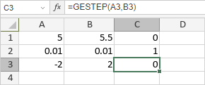

GESTEP funkcija
Funkcija GESTEP je jedna od inženjerskih funkcija. Koristi se za testiranje da li je broj veći od granične vrednosti. Funkcija vraća 1 ako je broj veći ili jednak graničnoj vrednosti, a 0 u suprotnom.
Sintaksa
GESTEP(broj, [step])
Funkcija GESTEP ima sledeće argumente:
| Argument | Opis |
|---|---|
| broj | Broj koji se upoređuje sa step. |
| step | Granična vrednost. Opcioni argument. Ako se izostavi, funkcija pretpostavlja da je step 0. |
Napomene
Kako primeniti funkciju GESTEP.
Primeri
Slika ispod prikazuje rezultat koji vraća funkcija GESTEP.
